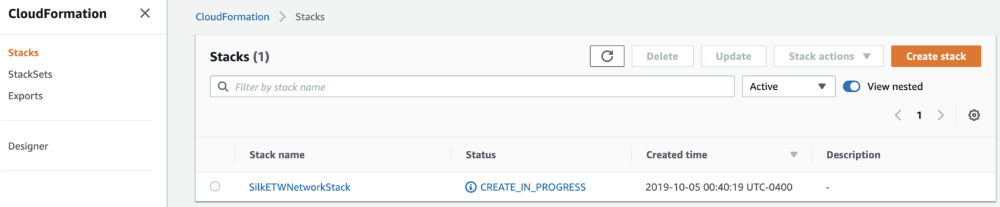

SilkETW¶
SilkETW & SilkService are flexible C# wrappers for ETW, they are meant to abstract away the complexities of ETW and give people a simple interface to perform research and introspection. The project provides a straightforward interface for ETW events collection, filtering and ingestion.
The Blacksmith project maintains templates to deploy:
A Windows 10 workstation with SilkETW running as a service and Winlogbeat configured to ship events.
A HELK instance with Logstash configurations already pre-loaded to parse ETW events and send them to an Elasticsearch index.
Templates¶
Template |
Format |
|---|---|
ec2-network-template |
|
helk-server-template |
|
windows-workstations-template |
Pre-Requirements¶
Make sure you follow the AWS setup steps provided to use the Blacksmith project.
An existing AWS Account
AWS CLI installed
EC2 Key Pair Available
10 mins of your day
Pre-Deployment¶
First, make sure you git clone the main repo:
$ git clone https://github.com/hunters-forge/Blacksmith
$ cd Blacksmith/aws/SilkETW/
Update Parameters File¶
You can update the parameters applied to the whole environment in the following folder:
$ cd cfn-parameters/
Most of them are already filled out for you to build the basic SilkETW environment. However, you must upate the following parametes:
Edit cfn-parameters/ec2-network-parameters.json and set the parameter value for RestrictLocation. Set your house public IP.
Edit cfn-parameters/helk-server-parameters.json and cfn-parameters/windows-workstations-parameters.json and set the parameter value for KeyName. Set the key pair name you created in the pre-requirements step.
Automatic Deployment¶
if you are still in the root directory of SilkETW (Blacksmith/aws/SilkETW), run the bash script ./deploy-silketw.sh
$ ./deploy-silketw.sh
Monitor Stack Build Logs¶
AWS CloudFormation Console¶
You can use the AWS CloudFormation console to see all your stacks, their events, templates uploaded and more.

All the templates that you sent over to AWS will start being processed immediately
{kind=link}
You can click on each stack and get more information about the deployment

You can also see the specific template mapped to each stack

You will be able to see the CREATE_COMPLETE status for all of them when they are built successfully.

Connect to Instances¶
SSH (HELK)¶
$ ssh -v -i <Private Key File>.pem ubuntu@<public-DNS-HELK-name>
Browser (HELK)¶
HELK User: helk
HELK User Password: hunt1ng! (you can change this in the parameters files)

{kind=link}
Delete Stacks¶
Once you are done using your stacks, I recommend to just delete them and build them again when you want to use them. Delete the SilkETWNetworkStack last (Others depend on it, so you wont be able to deleted it unless the other ones are deleted first)
$ aws --region us-east-1 cloudformation delete-stack --stack-name SilkETWWindowsWorkstationsStack
$ aws --region us-east-1 cloudformation delete-stack --stack-name SilkETWHELKtack
$ aws --region us-east-1 cloudformation delete-stack --stack-name SilkETWNetworkStack